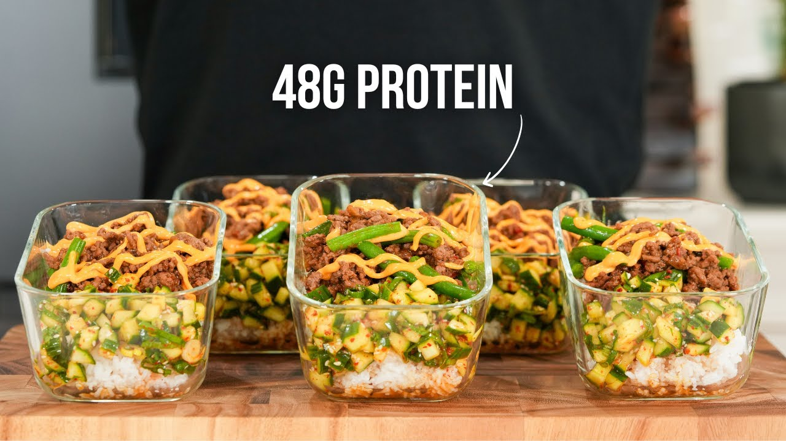

An Anthropological Analysis of Cultural Fullness and Symbolic Consumption in Contemporary Fitness Subcultures
Author: James Park
In contemporary fitness subcultures, satiation extends far beyond the biological sensation of a full stomach. Focusing on Mary Douglas's foundational work in Purity and Danger, I explore how "cultural fullness"—a sense of satisfaction derived from adherence to socially constructed rules and symbolic meanings—shapes dietary practices within gym and bodybuilding communities. [1] This framework is complemented by Therese Andrews' analysis of mother's milk, which demonstrates how modern moral regulations create new forms of symbolic value and taboo around bodily substances.[2]
As both a computer science major and avid bodybuilder, I bring an embodied understanding to this project. My own experience mirrors what I've observed across campus: the transformation of eating from a pleasurable, social act into a calculated performance of identity. This intense preoccupation can, in its extreme forms, mirror the clinical condition of muscle dysmorphia, where an individual's life becomes pathologically centered on diet and exercise to achieve a desired physique.[3] One metric dominates our bodybuildingworld: consuming close to 1g of protein per pound of bodyweight for "optimal" muscle recovery. This tunnel vision transforms every meal into an anxious calculation, where foods are evaluated not for taste or cultural significance, but for their ability to meet "minimum nutrition thresholds."
"Cultural fullness emerges as a more encompassing concept, referring to a sense of completeness and satisfaction that arises from conformity to social norms, the successful performance of a valued identity, and the feeling of belonging achieved through shared practices." [2]
Mary Douglas's concept of "matter out of place" provides a powerful lens for understanding fitness nutrition. Just as Douglas observed that "dirt is essentially disorder," fitness subcultures create elaborate systems of classification that transform ordinary foods into symbols of purity or pollution.
This classification system extends beyond simple "healthy" vs "unhealthy" categories. In bodybuilding communities, foods are evaluated through multiple symbolic frameworks simultaneously: macronutrient density, processing level, timing appropriateness, and social acceptance within the fitness community.
The power of these classifications lies not in their nutritional accuracy, but in their ability to create shared meaning and group identity. When a bodybuilder describes a food as "clean," they're not making a scientific statement—they're performing membership in a community that values discipline, optimization, and moral superiority through dietary choices.
A typical bodybuilding meal plan demonstrating the ritualization of eating. Each meal is precisely timed and measured, transforming food from a social experience into a calculated tracking of discipline and optimization.
Consider the same food (white rice) for a bodybuilder in different contexts:
"Pure" - glycogen replenishment, anabolic window optimization
"Polluted" - fat storage, wasted calories, insulin spike
"Sacred" - mass-building fuel
"Forbidden" - excess carbs, diet sabotage, not worth eating
For different contexts, the same food can be transformed into different statuses. Rice is a prime example of this transformation, but it extends to any food that bodybuilders consume, demonstrating how context, not the food itself, dictates its symbolic purity.
Douglas argued that "reflection on dirt involves reflection on the relation of order to disorder... rituals of purity and impurity create unity in experience." In fitness subcultures, meticulous meal prep, macro tracking, and supplement timing become modern purification rituals that create order from the "chaos" of unrestricted eating. [1]
On social media platforms, fitness influencers have quickly mastered the art of nutritional alchemy. They transform traditionally "impure" foods—pasta, pancakes, and even ice cream—into by adding protein powder or "balanding" out the macronutrients - for the perceived benefit of the consumer's health and physique. This isn't mere recipe modification; it's a form of symbolic purification that reveals how deeply the protein paradigm has penetrated our daily food consciousness.
Every Dartmouth café stocks Muscle Milk and Core Power, boasting 40g of protein per bottle. Protein bars masquerade as cookies. Athletes gravitate toward these options as quick, efficient 'recovery'—but at what cost to the social and cultural dimensions of eating?
The commodification of protein represents what Douglas would recognize as a new symbolic order. High-protein foods are sanctified, deemed "clean" and morally superior, while foods without prominent protein claims become suspect, potentially "polluting" to the carefully maintained bodily system.
Parallel timeline: Traditional food wisdom → Macronutrient obsession → Loss of cultural meaning
Within bodybuilding subcultures, dietary practices transcend mere nutrition to become identity-defining rituals. The meticulous weighing of food, the precise timing of meals, the careful macro calculations—these aren't just practical strategies but sacred acts that provide profound "cultural fullness" through their very difficulty.
185 lbs | Target: 185g protein daily | Push/Pull/Legs split, 6 days/week
Brian's Quote: "My diet is a crucial part of my identity. I can't go a day without making sure I'm on track. When people see my physique, they see discipline. The scale doesn't lie, the mirror doesn't lie, and neither do my macros. Everything else is just noise."
Andrews observed mothers enduring "unbearable" pain to breastfeed, driven by social pressure to embody the "good mother" ideal.[2] Similarly, bodybuilders embrace "dieting pain"—hunger, social isolation, obsessive planning—as necessary suffering that validates their commitment. This suffering, and the social isolation it often causes, is a common feature among individuals with muscle dysmorphia, who prioritize their regimen over social activities. [3]The pain itself becomes proof of purity.
Whenever my bodybuilding friends and I go grocery shopping, we develop an almost supernatural tunnel vision for high macro-value foods. Our eyes immediately scan for high-protein, no-sugar, high-fiber, low-carb options—absolutely no empty carbs. We actually walk past entire aisles of "normal" food without even seeing them, gravitating toward the same corner of the store where the Greek yogurt, lean meats, and protein bars live. A simple task of buying weekly groceries becomes a calculated mission to optimize macronutrient intake, sometimes taking ten minutes comparing protein sources and nutritional labels. I realize that this tunnel vision fundamentally shapes our entire relationship with food.
The gendered dimensions of fitness nutrition also reveal how food choices become performances of identity. Wentzell's work highlights how protein consumption is deeply tied to constructing masculinity; it's a way for men to work on their bodies, making them both aesthetically pleasing and visibly strong.[5] In gym culture, protein consumption serves as a marker of serious commitment and masculine strength. The cultural narrative persists: "real men eat meat," but it's evolved—now "real men" also track macros, avoid "feminine" foods, and maintain strict dietary discipline.
This gendered food system reflects Douglas's insight that "many ideas about sexual dangers are better interpreted as symbols of the relation between parts of society."[1] There seems to be an avoidance of "feminine" foods, which functions as a boundary-maintenance ritual, protecting the "pure" masculine identity from contamination.
The contemporary fitness landscape presents a fundamental paradox. Never before have we had such detailed nutritional knowledge, such precise tracking capabilities, such abundant protein-fortified options. Yet this abundance creates its own form of scarcity—a cultural and spiritual emptiness that no amount of optimized macros can fill.
"My grandmother never counted a macro in her life, and she's 85 and thriving super well. Honestly, food isn't really a math problem—it's a combination of culture, memory, love. We eat what's growing, what's traditional for the season, and frankly, what tastes good. There's a rhythm to it that no app can replicate."
| Physical Fullness | Cultural Fullness |
|---|---|
| 2000-2500 calories | Grandmother's soup shared with family |
| 200g protein target | Traditional recipes passed through generations |
| Optimal macro ratios | Seasonal eating rhythms |
| Post-workout anabolic window | Sunday family dinners |
| Measured portions | Intuitive satiation |
I believe that true satiation—cultural fullness—can't be achieved through nutritional optimization alone. The bodybuilder's precisely measured meals may build muscle, but they often fail to nourish the social and cultural dimensions of human experience. On the other hand, purely intuitive eating may neglect legitimate nutritional needs in athletic contexts.
"I want to look good and feel good, but I also want to enjoy pizza night with my roommates while binge-watching a Netflix series. I run 3 miles every other day, work out 5 times a week. I try to eat well 80% of the time and leave 20% for life. I don't stress about it."
In conclusion, contemporary fitness subcultures transform eating from biological necessity into complex identity performance. Through the lens of Douglas's purity/pollution framework and Andrews' analysis of symbolic consumption, we can see how "cultural fullness" in these communities derives not from nutritional completeness but from successful adherence to elaborate food rules that signal belonging, discipline, and moral virtue.
The commodification of protein, the ritualization of meal prep, the gendered anxieties around food choices—these phenomena reveal food's power to create and maintain social boundaries. However, they also highlight what's lost when eating becomes entirely instrumental: the cultural memories, social bonds, and intuitive wisdom that have nourished humans for hundreds of years.
As someone who has experienced the calculated discipline of bodybuilding, I've learned that true nourishment requires more than optimized macros. It demands a recognition that we hunger for meaning as much as minerals, for connection as much as calories. I believe that the challenge isn't choosing between physical and cultural fullness, but rather learning when each form of satiation serves us best.
Next time you eat, ask yourself: Am I feeding just my body, or also my soul? Am I following rules that nourish or imprison? Is this meal connecting me to others or isolating me in optimization? The answers might surprise you.
Algorithmic Appetite: How Social Media Creates New Food Taboos
Benedict Anderson's "imagined communities" concept finds new life in digital fitness spaces. [6] Instagram and TikTok create virtual tribes bound by shared dietary rules and transformation goals. These platforms don't just share information—they create and enforce new rituals and taboos. Research has shown that social media is a powerful influence on food choices, particularly for younger audiences, often promoting content that is not nutritionally sound.[4]
Social Media Analysis
Personal Reflection
On social media, I see influencers turning comfort foods into 'macro-friendly' versions. 'Anabolic French Toast,' 'Protein Pasta,' 'Guilt-Free Ice Cream'—the language reveals anxiety. Why must ice cream be guilt-free? This linguistic transformation shows how deeply we've internalized the idea that food must be optimized to be acceptable, a core tenet of the "clean eating" ideology spread online.
